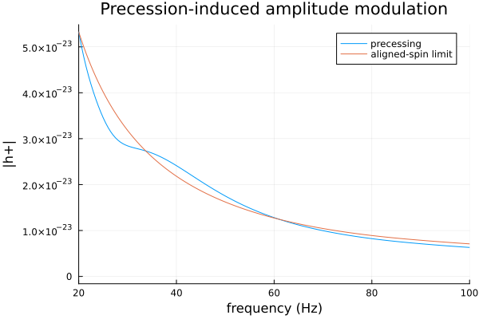
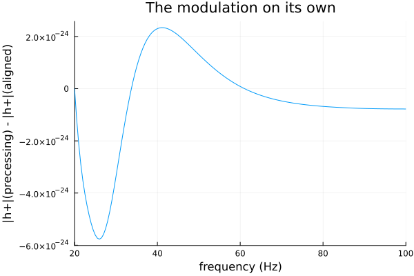

Precession: IMRPhenomXP
Every model so far (IMRPhenomD, IMRPhenomXAS, IMRPhenomXHM) assumes aligned spins — spin vectors parallel or antiparallel to the orbital angular momentum L, so L's direction never changes. Real spins can point anywhere; when they have a component in the orbital plane, spin-orbit coupling makes L itself precess around the (nearly-fixed) total angular momentum J over the inspiral. Viewed from a fixed line of sight, that precession modulates the observed (2,2)-mode amplitude and phase — a signature real parameter estimation uses to measure spin orientations, not just magnitudes.
IMRPhenomXP adds this effect to IMRPhenomXAS's aligned-spin (2,2) mode via dominant-mode twisting-up: closed-form (NNLO post-Newtonian) Euler angles alpha(f), beta(f), epsilon(f) describing L's precession cone, applied as a frequency-dependent rotation to the aligned-spin (2,2) strain (see IMRPhenomXPrecession.jl's module docstring for the full LALSuite derivation and its explicit scope limits — this is the same "NNLO angles, dominant mode only" approximation LALSuite calls IMRPhenomXP, not the full precessing-multi-mode IMRPhenomXPHM covered in the next tutorial).
using GravitationalWaveforms, Plots
gr()Plots.GRBackend()Parametrization: Cartesian spin components
Precessing models take each spin as three Cartesian components (dimensionless, |chi| <= 1) rather than a single aligned value — z is still the orbital angular momentum direction at the reference frequency, x/y are in the orbital plane:
m1, m2 = 36.0, 29.0 # m1 >= m2 required (see Conventions)
chi1x, chi1y, chi1z = 0.5, 0.0, 0.1 # substantial in-plane spin on the more massive body
chi2x, chi2y, chi2z = 0.0, 0.0, -0.05
f_ref = 20.0
inclination = pi / 3
phiRef = 0.0
dL = 0.41
validate_phenomxp_precession_params(m1, m2, chi1x, chi1y, chi1z, chi2x, chi2y, chi2z; f_ref=f_ref)Generating the waveform
twist_up22 plays the same role Phi/Ampl play for the aligned-spin models, but returns (hp, hc) directly (the twisting-up rotation mixes the two polarizations, so they can no longer be built from a single scalar amplitude/phase pair):
f = collect(20.0:0.5:512.0)
hp, hc = twist_up22(IMRPhenomXP(), f, m1, m2, chi1x, chi1y, chi1z, chi2x, chi2y, chi2z,
f_ref, inclination, phiRef, dL)Isolating the precession signature
To see precession's effect in isolation, generate the same system with the in-plane spin components zeroed out (an aligned-spin limit, still evaluated through IMRPhenomXP itself, so any difference below is purely the precession machinery, not a different underlying model):
hp_aligned, hc_aligned = twist_up22(IMRPhenomXP(), f, m1, m2, 0.0, 0.0, chi1z, 0.0, 0.0, chi2z,
f_ref, inclination, phiRef, dL)
plot(f, [abs.(hp) abs.(hp_aligned)]; xlims=(20, 100), label=["precessing" "aligned-spin limit"],
xlabel="frequency (Hz)", ylabel="|h+|", title="Precession-induced amplitude modulation")
The precessing case's amplitude visibly wobbles around the smooth aligned-spin curve — that wobble (period set by the precession frequency, which itself evolves as the binary inspirals) is the twisting-up rotation's signature, entirely absent when there's no in-plane spin to precess:
modulation = abs.(hp) .- abs.(hp_aligned)
plot(f, modulation; xlims=(20, 100), legend=false,
xlabel="frequency (Hz)", ylabel="|h+|(precessing) - |h+|(aligned)",
title="The modulation on its own")
Next: the Precessing + HM tutorial combines this same precession machinery with IMRPhenomXHM's higher-order modes into the full model — the two effects this tutorial series has so far treated separately, together.
This page was generated using Literate.jl.